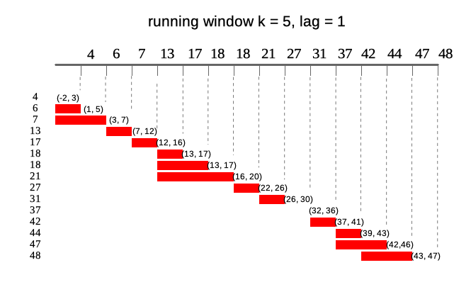

About
Package contains standard running functions (aka. rolling) with additional options like varying window size, lagging, handling missings and windows depending on date. runner brings also rolling streak and rolling which, what extends beyond range of functions already implemented in R packages. This package can be successfully used to manipulate and aggregate time series or longitudinal data.
Using runner

runner package provides functions applied on running windows. The most universal function is runner::runner which gives user possibility to apply any R function f in running window. R function f should return single value for each window. In example below trimmed mean is calculated on 14-days window.
Running windows
All options of the runner are explained in each section below using illustrations and window_run function. window_run creates list of running windows with settings which can be used in runner::runner and other functions in the package.
Following diagram illustrates what running windows are - in this case running windows of length k = 4. For each of 15 elements of a vector each window contains current 4 elements.

Window size
k denotes number of elements in window. If k is a single value then window size is constant for all elements of x. For varying window size one should specify k as integer vector of length(k) == length(x) where each element of k defines window length. If k is empty it means that window will be cumulative (like base::cumsum). Example below illustrates window of k = 4 for 10th element of vector x.

Window lag
lag denotes how many observations windows will be lagged by. If lag is a single value than it is constant for all elements of x. For varying lag size one should specify lag as integer vector of length(lag) == length(x) where each element of lag defines lag of window. Default value of lag = 0. Example below illustrates window of k = 4 lagged by lag = 2 for 10-th element of vector x. Lag can also be negative value, which shifts window forward instead of backward.

Windows depending on date
Sometimes data points in dataset are not equally spaced (missing weekends, holidays, other missings) and thus window size should vary to keep expected time frame. If one specifies idx argument, than running functions are applied on windows depending on date. idx should be the same length as x of class Date or integer. Including idx can be combined with varying window size, than k will denote number of periods in window different for each data point. Example below illustrates window of size k = 5 lagged by lag = 2. In parentheses ranges for each window.

running at
Runner by default returns vector of the same size as x unless one puts any-size vector to at argument. Each element of at is an index on which runner calculates function. Below illustrates output of runner for at = c(13, 27, 45, 31) which gives windows in ranges enclosed in square brackets. Range for at = 27 is [22, 26] which is not available in current indices.

NA padding
Using runner one can also specify na_pad = TRUE which would return NA for any window which is partially out of range - meaning that there is no sufficient number of observations to fill the window. By default na_pad = FALSE, which means that incomplete windows are calculated anyway. na_pad is applied on normal cumulative windows and on windows depending on date. In example below two windows exceed range given by idx so for these windows are empty for na_pad = TRUE. If used sets na_pad = FALSE first window will be empty (no single element within [-2, 3]) and last window will return elements within matching idx.